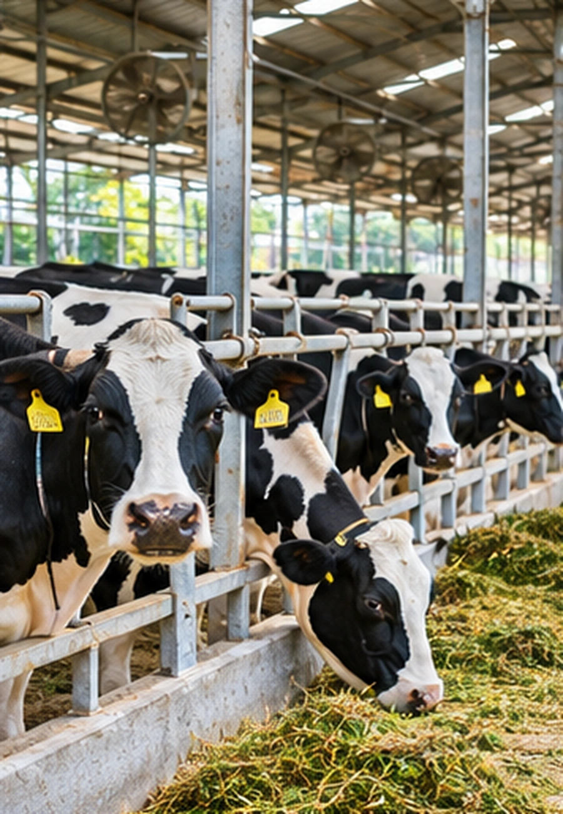
01FARM SUPPORT · 01
Dairy & cattle care
Daily feeding, fresh water and steady observation help support a healthier herd.
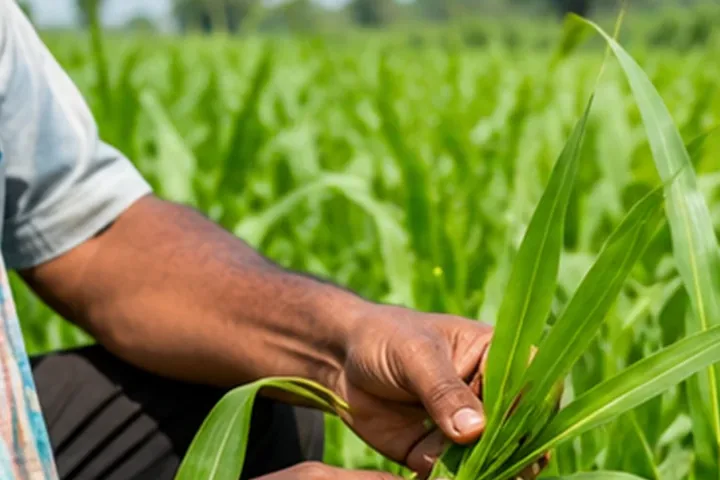
We bring together useful products and straightforward guidance to make day-to-day farm work easier.
FarmCare brings useful supply categories and straightforward guidance together, helping you spend less time searching and more time looking after the work in front of you.
Discover our storyFrom healthy animals to well-prepared fields, explore the connected areas that help a farm run with confidence.

01Daily feeding, fresh water and steady observation help support a healthier herd.
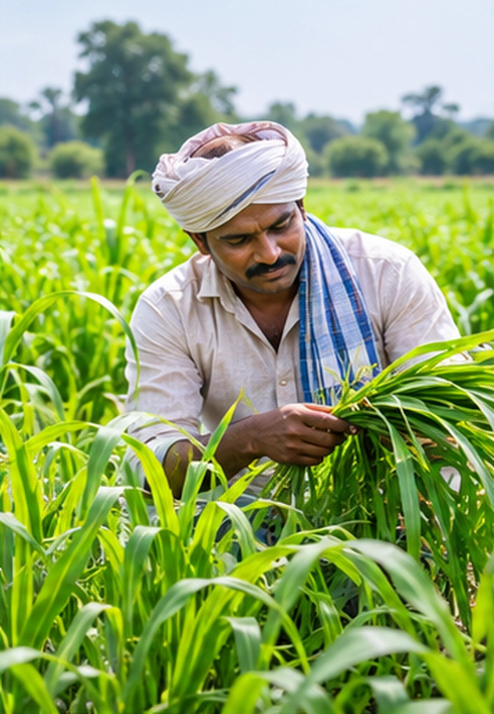
02Choose practical nutrition and fodder routines around your animals and the season.
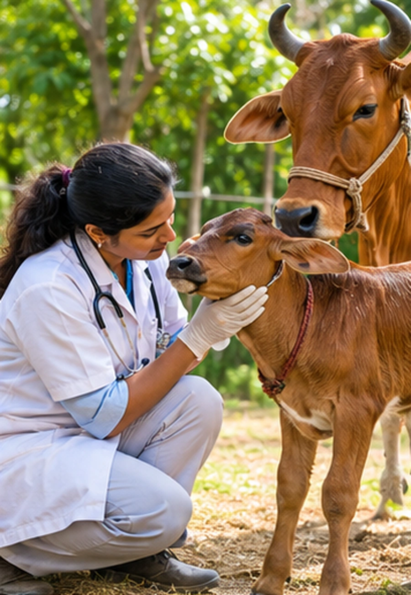
03Early attention and appropriate professional care help animals stay comfortable.
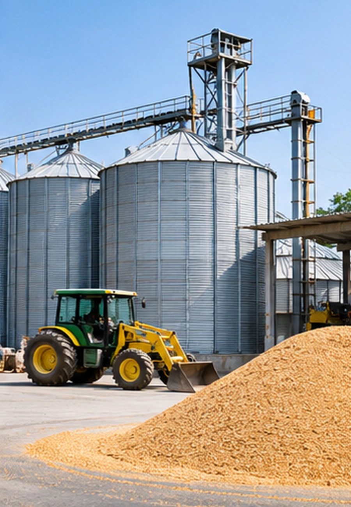
04Organised storage and reliable handling keep daily supplies ready when needed.
Every farm has a different rhythm. Explore the main areas of support—from daily nutrition and livestock wellbeing to equipment and dairy routines—and find the category that best matches the work you do.
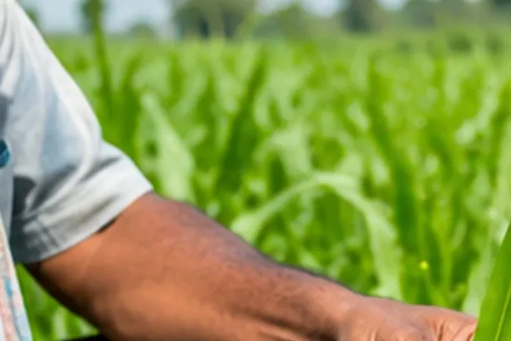
Feed and nutrition essentials for daily livestock needs.
Explore service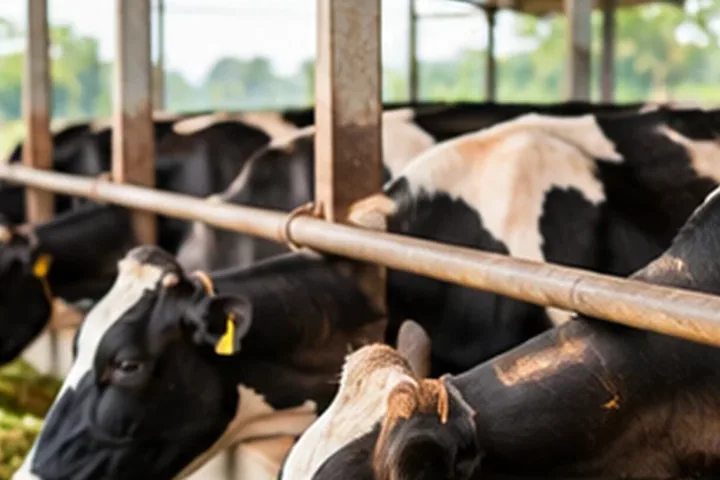

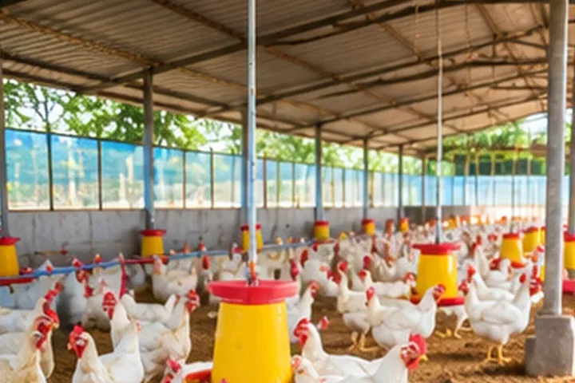
Choose each stage to explore how FarmCare helps make everyday farm decisions clearer. Your progress indicator moves from 25% to 100% as you complete the journey.
Start with the basics: the animals you care for, the way your farm operates and the supply or information you need right now.
One of four steps exploredA farm runs on many connected details: healthy animals, fresh feed, well-kept spaces and reliable field work. These photographs offer a closer look at the routines behind a productive day.
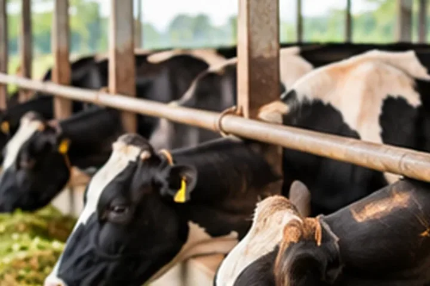
Regular observation and clean, calm surroundings help support animal wellbeing through every season.
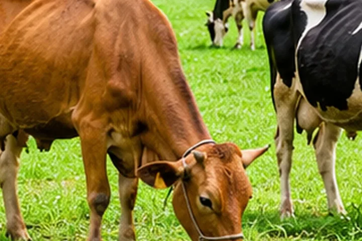
Keep feeding, fresh water and housing routines aligned with the changing needs of livestock.
Plan fodder, storage and field activity early so everyday work stays dependable.
Explore the practical details that support healthier animals, smoother routines and more confident farm decisions.
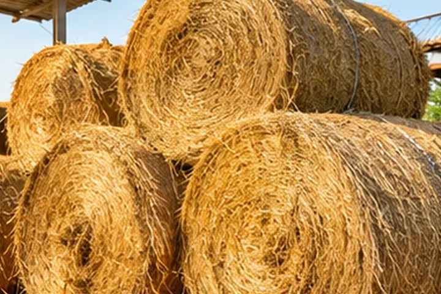
Build dependable routines around observation, comfort and everyday care.
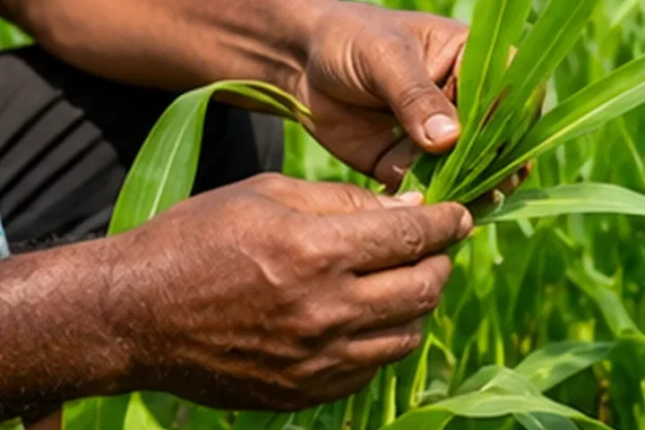
Prepare feed and fodder requirements with the season and herd in mind.
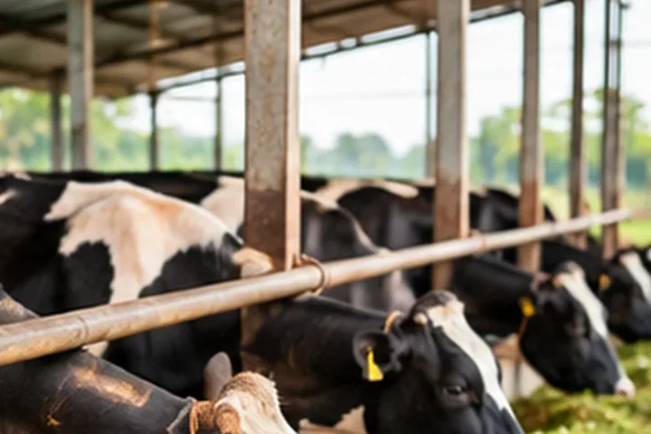
Keep equipment and working spaces ready for the next task.
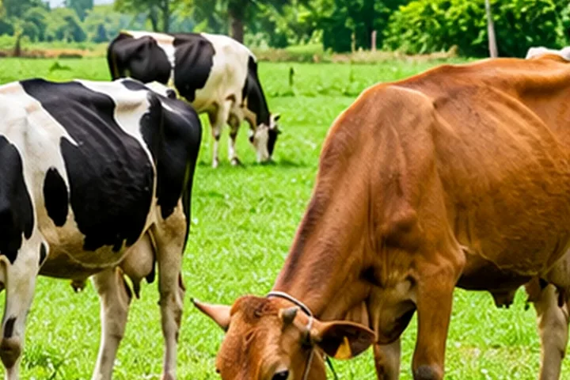
Organise seasonal work early and make the next step easier to manage.
Clear product information and a team that understands the day-to-day demands of livestock care.
Good support means knowing what you need, why it matters and where to find it.THE FARMCARE APPROACH
Tell us what you are looking for. We’ll help you find a practical next step.
Contact FarmCare